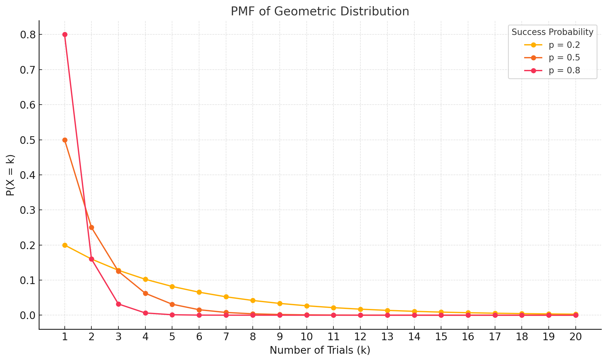
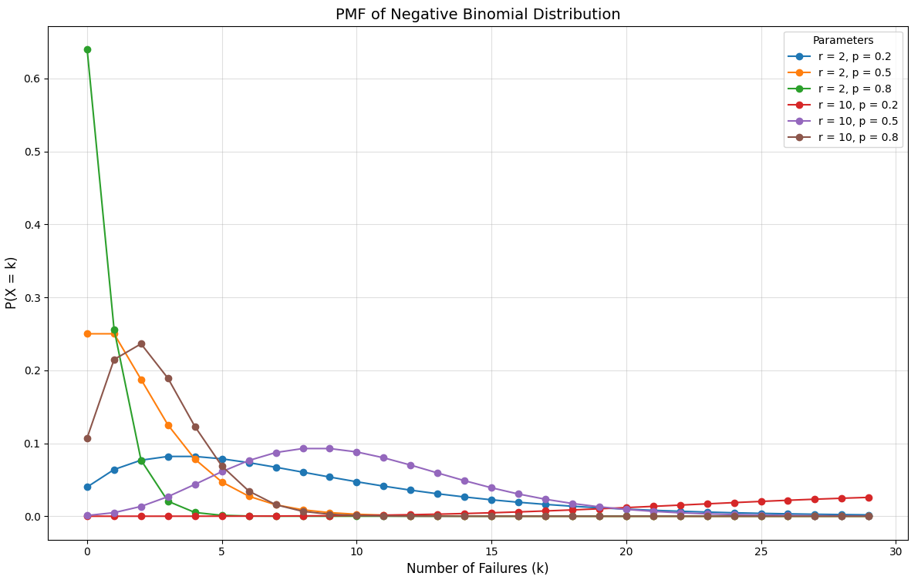
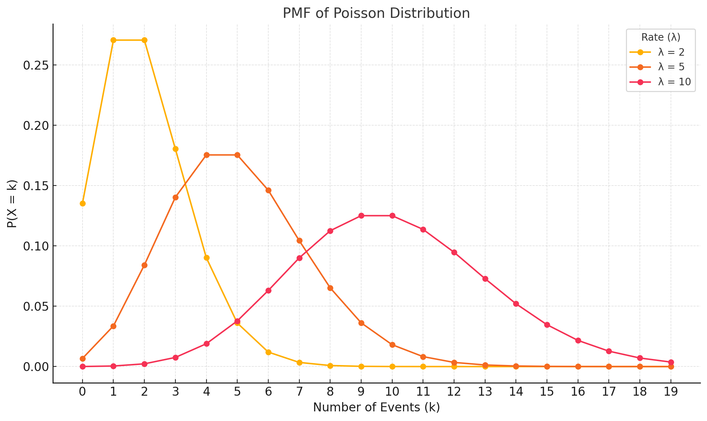

For a number of distributions we'll cover:
- What are its mathematical properties?
- How does a plot looks like?
- What it models / when to use it?
Geometric
$$
\large \displaystyle
P(X = k) = (1 - p)^{k-1} \cdot p, k \in [1, \infty)
$$
Parameters
Mean
$$
\large \displaystyle
\mathbb{E}[X] = \frac{1}{p}
$$
Standard Deviation
$$
\large \displaystyle
\newcommand{\Var}{\operatorname{Var}}
\Var(X) = \frac{1 - p}{p^2}
$$
Plot
import numpy as np
import matplotlib.pyplot as plt
# Parameters for geometric distribution
p_success = [0.2, 0.5, 0.8] # Probabilities of success
k = np.arange(1, 21) # Number of trials (1 to 20)
# Plot the PMF for different values of p
plt.figure(figsize=(10, 6))
for p in p_success:
pmf = (1 - p) ** (k - 1) * p # Geometric PMF
plt.plot(k, pmf, marker='o', label=f'p = {p}')
# Customizing the plot
plt.title('PMF of Geometric Distribution', fontsize=14)
plt.xlabel('Number of Trials (k)', fontsize=12)
plt.ylabel('P(X = k)', fontsize=12)
plt.xticks(k)
plt.grid(alpha=0.4)
plt.legend(title='Success Probability', fontsize=10)
plt.tight_layout()
# Display the plot
plt.show()

Intuition
What?
The probability of success after \(k\) trials.
When?
- In a football game (soccer), how many shots on target before a goal is scored?
- In an ad-clicking context, how many page views before an ad is clicked?
The probability of success decreases as the number of attempts increases. It is less probable to observe that 10 attempts were made before seeing heads that it is to see it after only 2.
Why?
Resource allocation. Knowing how many attempts, or effort, before detecting something can drive cost-effectiveness analysis. If we, for instance, know that \(p = 0.1\) (1 out of 10), then \(\mathbb{E}[X] = \frac{1}{p} = \frac{1}{10} = 10\). In a call center, if we know that the expected number of calls to reach a customer is 10, then we could hire 10 agents to dial recurrently if I wanted to reach customers faster.
Negative Binomial
$$
\large
P(X = k) = \binom{k + r - 1}{r - 1}\cdot(1 - p)^{k} \cdot p^{r}
$$
Where:
- \(k:\) Number of observed failures.
- \(r:\) Number of observed successes.
- \(X = k:\) Number of failures before achieving \(r\) successes
- \(p:\) Probability of success.
- \(1 - p:\) Probability of failure
- \(\binom{k + r - 1}{r - 1}:\) Binomial coefficient, or number of ways to arrange \(r - 1\) successes in \(k + r - 1\) trials (we subtract \(1\) because we care about the arrangements before reaching the \(r^{\text{th}}\) success).
It is important to note that \(k\) specifically refers to \(failures\). Hence, \(\text{Trials} = k + r\).
Plot
import numpy as np
import matplotlib.pyplot as plt
from scipy.stats import nbinom
# Parameters for the negative binomial distribution
p_success = [0.2, 0.5, 0.8] # Probabilities of success
r_values = [2, 10] # Number of successes (r)
k = np.arange(0, 30) # Number of failures (k)
# Plot the PMF for different combinations of r and p
plt.figure(figsize=(12, 8))
for r in r_values:
for p in p_success:
pmf = nbinom.pmf(k, r, p) # Negative binomial PMF
plt.plot(k, pmf, label=f'r = {r}, p = {p}', marker='o')
# Customizing the plot
plt.title('PMF of Negative Binomial Distribution', fontsize=14)
plt.xlabel('Number of Failures (k)', fontsize=12)
plt.ylabel('P(X = k)', fontsize=12)
plt.grid(alpha=0.4)
plt.legend(title='Parameters', fontsize=10)
plt.tight_layout()
# Display the plot
plt.show()

Intuition
The
negative binomial and
geometric distributions share similarities, with nuanced differences that set them apart. For example,
the geometric distribution models the number of trials until the first success, while
the negative binomial models the number of failures before achieving \(r\) successes.
Why might we choose one over the other? It seems that
the negative binomial distribution is particularly useful when we have a specific goal in mind. Consider the following call center case:
We aim to reach 100 customers daily.
-
The geometric distribution helps identify how many trials are needed to achieve a single success. For instance, if \(\mathbb{E}[𝑋] = 10 \), and a single agent takes 10 minutes to make 10 calls, it would take them 100 minutes, on average, to reach 10 customers. Scaling up to 10 agents would allow the team to reach 100 customers in approximately 100 minutes.
-
The negative binomial distribution, however, can act as a shortcut by embedding the goal directly into the model. If we need to reach 100 customers in a day, and we know that, on average, 9 failures occur for every success, we can estimate that 900 failures are required to achieve 100 successes. Thus, the total effort involves 1,000 calls (900 failures + 100 successes).
Poisson
$$
\large \displaystyle
P(X = k) = \frac{\lambda^{k} \cdot e^{-\lambda}}{k!}, k \in [0, \infty)
$$
Where:
- \(k:\) Number of events in an given space or time interval.
- \(\lambda:\) The average number of events in the space or time interval.
Parameters
Mean
$$
\large \displaystyle
\mathbb{E}[X] = \lambda
$$
Standard Deviation
$$
\large \displaystyle
\newcommand{\Var}{\operatorname{Var}}
\Var(X) = \lambda
$$
Plot
import numpy as np
import matplotlib.pyplot as plt
from scipy.stats import poisson
# Parameters for the Poisson distribution
lambda_values = [2, 5, 10] # Average rates (λ)
k = np.arange(0, 20) # Number of events (k)
# Plot the PMF for different λ values
plt.figure(figsize=(10, 6))
for lam in lambda_values:
pmf = poisson.pmf(k, lam) # Poisson PMF
plt.plot(k, pmf, marker='o', label=f'λ = {lam}')
# Customizing the plot
plt.title('PMF of Poisson Distribution', fontsize=14)
plt.xlabel('Number of Events (k)', fontsize=12)
plt.ylabel('P(X = k)', fontsize=12)
plt.xticks(k)
plt.grid(alpha=0.4)
plt.legend(title='Rate (λ)', fontsize=10)
plt.tight_layout()
# Display the plot
plt.show()

Intuition
What?
Blah
When?
Why?
Blah